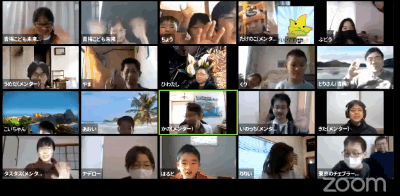

第2回開催報告
子どもふれあいフェスタ2020「プログラミングワークショップ」
2021-02-14
東京都青梅市では様々なイベントが中止もしくはオンライン開催を検討しています。子どもふれあいフェスタ2020もオンライン＆Youtube配信。オンラインで出来る従来のイベントが限られる中で、子どもたちが楽しめるプログラミングワークショップは大きめに取り上げて頂きました。CoderDojo青梅は、NPO法人青梅こども未来としての共催です。
参加してくれたニンジャは小２から小３までの７組の親子、そして高校生ユースメンターの計８組。Scratch未経験者および２回目というCoderDojo青梅と共にみんなスタートアップなので、近隣のCoderDojo立川と調布からメンターが支援に駆け付けメンターは計10名！ニンジャ一人にメンター一人以上の手厚いサポートでプログラミングワークショップを楽しみました。
今回もニンジャ一人一人が自分でScratchの作品テーマを選んで制作に取り組みました。初めてのニンジャにはブロックの命令を試してもらったり基本的なScratch操作方法をレクチャーしました。慣れてきたニンジャには、何故思った通りに動かないのかいっぱい考えてもらったり、時々メンターがアドバイスしたり一緒にプログラミング学習しました。

独学で沢山の作品を制作しているニンジャ、Scratchは初級のユースメンター、そしてベテランのメンターがみんなで同じScratch言語で楽しみました。（↓）ね、ね、みんなの笑顔、楽しそうでしょう。

今回のイベントのチラシです（↓）。このような立派なイベントにCoderDojo青梅も「NPO法人青梅こども未来としての共催」として参加できて良い経験になりました。
このイベントはZoomのブレイクアウトルームを使って７つの部屋に分かれて、それぞれのテーマで制作しました。Youtubeストリーミングも同時配信しています。NPO法人青梅こども未来のスタッフのICT技術活用にとても助けられました。感謝しております。